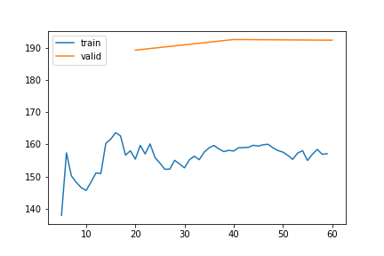
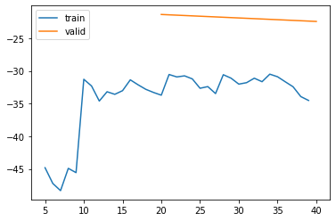

%load_ext autoreload
%autoreload 2Training Kalman Filter for Results - 12 Feb
from meteo_imp.kalman.fastai import *
from meteo_imp.kalman.filter import *
from meteo_imp.utils import *
from meteo_imp.data import *
from meteo_imp.gaussian import *
from fastai.tabular.learner import *
from fastai.learner import *
from fastai.callback.all import *
from fastcore.foundation import L
from fastcore.foundation import patch
from pathlib import Path, PosixPath
from meteo_imp.kalman.fastai import show_results
import pandas as pd
import numpy as np
import torch
import random
from pyprojroot import here
from sklearn.decomposition import PCA
from matplotlib import pyplot as plt
from IPython.display import Image
from tqdm.auto import tqdmfrom fastcore.basics import *reset_seed()hai = pd.read_parquet(hai_big_path)
hai_era = pd.read_parquet(hai_era_big_path)base = here("analysis/results/trained_12feb")base.mkdir(exist_ok=True)@patch
def add_end(self: PosixPath, end): return self.parent / (self.name + end)def train_or_load(model, dls, lr, n, path, keep=True):
save_models = SaveModelsBatch(times_epoch=5)
csv_logger = CSVLogger(path.add_end("log.csv"))
learn = Learner(dls, model, KalmanLoss(only_gap=True), cbs = [Float64Callback, save_models, csv_logger], metrics=rmse_gap)
items = random.choices(dls.valid.items, k=4)
if path.add_end(".pickle").exists() and keep:
learn.model = torch.load(path.add_end(".pickle"))
display(csv_logger.read_log())
plot = Image(filename=path.add_end("_loss_plot.png"))
display(plot)
else:
learn.fit(lr, n)
torch.save(learn.model, path.add_end(".pickle"))
learn.recorder.plot_loss()
plt.savefig(path.add_end("_loss_plot.png"))
return learn, items def metric_valid(learn, dls=None):
nrmse = []
losses = []
dls = ifnone(dls, learn.dls.valid)
for input, target in tqdm(dls):
pred = learn.model(input)
nrmse.append(learn.metrics[0](pred, target))
losses.append(learn.loss_func(pred, target).item())
metric = pd.DataFrame({'loss': losses, 'rmse': nrmse})
return metric.agg(['mean', 'std'])Generic model | gap len 3-336 | gap 1 random
dls_A1v = imp_dataloader(
df = hai,
control = hai_era,
var_sel = gen_var_sel(list(hai.columns), n_var=1),
block_len=100+336,
gap_len=gen_gap_len(3, 336),
bs=20,
control_lags=[1],
shifts=gen_shifts(50),
n_rep=5).cpu()model_A1v = KalmanFilterSR.init_local_slope_pca(len(hai.columns),len(hai_era.columns), pred_only_gap=True)learn_A1v, items_A1v = train_or_load(model_A1v, dls_A1v, 3, 1e-3, base / "1_gap_varying_3-336_v1")| epoch | train_loss | valid_loss | rmse_gap | time | |
|---|---|---|---|---|---|
| 0 | 0 | 193.353548 | 146.601647 | 0.573572 | 29:12 |
| 1 | 1 | 119.679036 | 104.690430 | 0.456970 | 29:00 |
| 2 | 2 | 95.036298 | 96.871684 | 0.428096 | 29:02 |
metric_valid(learn_A1v)| loss | rmse | |
|---|---|---|
| mean | 96.871684 | 0.428096 |
| std | 38.539188 | 0.113949 |
learn_A1v, items_A1v = train_or_load(learn_A1v.model, dls_A1v, 1, 5e-6, base / "1_gap_varying_3-336_v2")| epoch | train_loss | valid_loss | rmse_gap | time | |
|---|---|---|---|---|---|
| 0 | 0 | 84.676688 | 91.879223 | 0.42373 | 30:58 |

Finetune gap length
gap_models = {}
gap_dls = {}
gap_learn = {}
gap_items = {}
for gap_len in tqdm([6,24,48,7*48]):
print(f"Gap len: {gap_len}")
gap_dls[gap_len] = imp_dataloader(hai, hai_era, var_sel = gen_var_sel(list(hai.columns), n_var=1), block_len=gap_len+100, gap_len=gap_len, bs=20, control_lags=[1], n_rep=1, shifts=gen_shifts(50)).cpu()
gap_models[gap_len] = learn_A1v.model.copy()
display(metric_valid(learn_A1v, dls=gap_dls[gap_len].valid))
gap_learn[gap_len], gap_items[gap_len] = train_or_load(gap_models[gap_len], gap_dls[gap_len], 3, 2e-5, base / f"gap_1_any_var_gap_len_{gap_len}_v1.pickle")
plt.show()
Gap len: 6| loss | rmse | |
|---|---|---|
| mean | 1.247630 | 0.234464 |
| std | 3.109537 | 0.123313 |
| epoch | train_loss | valid_loss | rmse_gap | time | |
|---|---|---|---|---|---|
| 0 | 0 | 2.278421 | 1.701985 | 0.248359 | 01:33 |
| 1 | 1 | 1.197995 | 1.562936 | 0.247491 | 01:30 |
| 2 | 2 | 0.676090 | 1.439395 | 0.245816 | 01:28 |

Gap len: 24| loss | rmse | |
|---|---|---|
| mean | 13.170145 | 0.378981 |
| std | 9.782837 | 0.108107 |
| epoch | train_loss | valid_loss | rmse_gap | time | |
|---|---|---|---|---|---|
| 0 | 0 | 8.605524 | 9.680723 | 0.346301 | 02:09 |
| 1 | 1 | 8.196774 | 9.658409 | 0.345941 | 02:03 |
| 2 | 2 | 7.940351 | 9.333798 | 0.343399 | 02:04 |

Gap len: 48| loss | rmse | |
|---|---|---|
| mean | 23.275539 | 0.386880 |
| std | 8.201757 | 0.079038 |
| epoch | train_loss | valid_loss | rmse_gap | time | |
|---|---|---|---|---|---|
| 0 | 0 | 20.522270 | 28.226681 | 0.428597 | 02:44 |
| 1 | 1 | 20.123038 | 27.948954 | 0.425583 | 02:38 |
| 2 | 2 | 21.275250 | 27.780100 | 0.422899 | 02:39 |

Gap len: 336| loss | rmse | |
|---|---|---|
| mean | 162.622499 | 0.430899 |
| std | 97.689637 | 0.138170 |
| epoch | train_loss | valid_loss | rmse_gap | time | |
|---|---|---|---|---|---|
| 0 | 0 | 158.012086 | 189.406813 | 0.460826 | 06:31 |
| 1 | 1 | 158.148799 | 192.724921 | 0.462467 | 06:20 |
| 2 | 2 | 157.097036 | 192.511927 | 0.461974 | 06:43 |

Variable specialized | gap only for one variable | gap len 3-336
fine tune the model to only one variable
from fastcore.basics import *from IPython.display import HTMLdisplay(HTML("<h3> Hello </h3>"))Hello
spec_models = {}
spec_dls = {}
spec_learn = {}
spec_items = {}
for var in tqdm(list(hai.columns)):
display(HTML(f"<h3> {var} </h3>"))
spec_dls[var] = imp_dataloader(hai, hai_era, var_sel = var, block_len=100+336, gap_len=gen_gap_len(3, 336), bs=20, control_lags=[1], n_rep=1, shifts=gen_shifts(50)).cpu()
spec_models[var] = learn_A1v.model.copy()
print("Metrics of generic model for only one variable")
display(metric_valid(learn_A1v, dls=spec_dls[var].valid))
spec_learn[var], spec_items[var] = train_or_load(spec_models[var], spec_dls[var], 2, 1e-5, base / f"{var}_specialized_gap_3-336_v1.pickle")
plt.show()TA
Metrics of generic model for only one variable| loss | rmse | |
|---|---|---|
| mean | -18.969569 | 0.190322 |
| std | 19.723901 | 0.026613 |
| epoch | train_loss | valid_loss | rmse_gap | time |
|---|---|---|---|---|
| 0 | -33.293316 | -21.363984 | 0.191716 | 05:21 |
| 1 | -34.516781 | -22.428404 | 0.190717 | 05:18 |

SW_IN
Metrics of generic model for only one variable| loss | rmse | |
|---|---|---|
| mean | 64.686085 | 0.313436 |
| std | 26.053601 | 0.084501 |
50.00% [1/2 05:20<05:20]
| epoch | train_loss | valid_loss | rmse_gap | time |
|---|---|---|---|---|
| 0 | 66.526362 | 68.324399 | 0.326852 | 05:20 |
25.00% [5/20 01:17<03:52 66.0879]
KeyboardInterrupt: do some additional training for LW_IN and SW_IN
spec_learn2 = {}
for var in tqdm(['SW_IN', 'LW_IN']):
print(var)
print(metric_valid(spec_learn[var].model, dls=spec_dls[var].valid))
spec_learn2[var], _ = train_or_load(spec_learn[var].model, spec_dls[var], 3, 2e-5, base / f"{var}_specialized_gap_3-336_v3.pickle")
plt.show()
1 var gap - varying 336 - No Control
dls_A1v_nc = imp_dataloader(hai, hai_era, var_sel = gen_var_sel(list(hai.columns), n_var=1), block_len=100+336, gap_len=gen_gap_len(3,336), bs=5, control_lags=[1], shifts=gen_shifts(100), n_rep=5).cpu()model_A1v_nc = KalmanFilterSR.init_local_slope_pca(len(hai.columns),len(hai.columns), df_pca = hai, pred_only_gap=True, use_control=False)learn_A1v_nc, items_A1v_nc = train_or_load(model_A1v_nc, dls_A1v_nc, 3, 1e-3, base / "1_gap_varying_336_no_control_v1")All variables - 30 all
dls_Aa = imp_dataloader(hai, hai_era, var_sel = list(hai.columns), block_len=120, gap_len=30, bs=20, control_lags=[1], n_rep=10).cpu()model_Aa = learn_A1v.model.copy()metric_valid(learn_Aa)learn_Aa, items_Aa = train_or_load(model_Aa, dls_Aa, 3, 3e-4, base / "All_gap_all_30_v1")